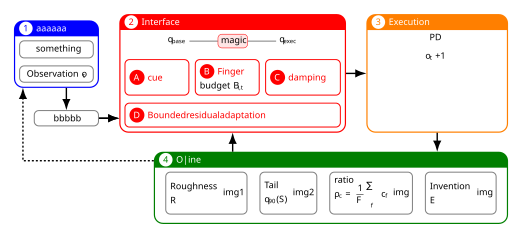

SVG

LaTeX
使用minipage套tcolorbox，结合tikz绘制箭头。
\documentclass[border=14pt, varwidth=25cm]{standalone}
\usepackage{ctex}
\usepackage{graphicx}
\usepackage[most]{tcolorbox}
\usepackage{pgfplots}
\usepackage{amsmath}
\usepackage{amssymb}
\usepackage{multirow}
\usepackage{xcolor}
\usepackage{varwidth}
\usetikzlibrary{positioning, arrows.meta, calc, tikzmark}
\colorlet{darkgreen}{green!50!black}
\graphicspath{{./figures/}}
% 一个圆圈文字
\newcommand{\circledtext}[3]{%
\tikz[baseline=(X.base)]{%
\node[circle, draw=none, fill=#2, inner sep=2pt] (X) {%
\textcolor{#1}{#3}%
};%
}%
}
\begin{document}
\small
\tikzset{
my arrow/.style={->, >={Latex[scale=1.2]}, line width=1.4pt}
}
% 1. 全局样式定义
\tcbset{
my flex/.style={
enhanced,
% nobeforeafter, % 取消前后间距
% hbox, % 宽度由内部内容决定
arc=8pt,
boxrule=1.2pt,
colback=#1!0,
colframe=#1,
fonttitle=\bfseries,
boxsep=0pt, top=4pt, bottom=4pt, left=4pt, right=4pt
},
% 子盒子专用样式
sub flex/.style={
enhanced,
% nobeforeafter,
% hbox,
arc=4pt, % 子盒子圆角小一点
boxrule=1pt,
colback=#1!0,
colframe=#1, % !80
fonttitle=\small\bfseries,
center title,
% halign=center, % 内部文字水平居中
valign=center,
% 稍微收紧子盒子的内边距
boxsep=0pt, top=4pt, bottom=4pt, left=4pt, right=4pt
},
my flex/.default=gray,
sub flex/.default=gray
}
\begin{flushright}
\begin{minipage}{3.0cm}
\begin{flushright}
\begin{tcolorbox}[
my flex=blue,
% equal height group=A,% 父盒子：这一排A盒子强制等高
title=\circledtext{blue}{white}{1} aaaaaa,
remember as=box1
]
\begin{tcolorbox}[
sub flex=gray,
]
\centering
something
\end{tcolorbox}
\begin{tcolorbox}[
sub flex=gray,
]
\centering
Observation $o_t$
\end{tcolorbox}
\end{tcolorbox}%
\vspace{0.5cm}
\begin{minipage}{2.3cm}
\begin{tcolorbox}[
sub flex=gray,
remember as=oap
]
\centering
bbbbb
\end{tcolorbox}
\end{minipage}
\end{flushright}
\end{minipage}
\hspace{0.5cm}
\begin{minipage}{8.0cm}
\begin{tcolorbox}[
my flex=red,
title=\circledtext{red}{white}{2} Interface,
remember as=box2,
equal height group=box,
]
\begin{center}
\begin{tikzpicture}
\node[] (qbase) {$q_{\text{base}}$};
\node[right=of qbase, draw=red, fill=red!10, rounded
corners] (magic) {magic};
\node[right=of magic] (qexec) {$q_{\text{exec}}$};
\draw[] (qbase) -- (magic);
\draw[] (magic) -- (qexec);
\end{tikzpicture}
\end{center}
\begin{minipage}{0.3\linewidth}
\begin{tcolorbox}[
sub flex=red,
equal height group=DI1
]
\textcolor{red}{\circledtext{white}{red}{A}
\bfseries cue}
\end{tcolorbox}
\end{minipage}\hfill
\begin{minipage}{0.3\linewidth}
\begin{tcolorbox}[
sub flex=red,
equal height group=DI1
]
\textcolor{red}{\circledtext{white}{red}{B}
\bfseries Finger
}
budget $B_{i,t}$
\end{tcolorbox}
\end{minipage}\hfill
\begin{minipage}{0.35\linewidth}
\begin{tcolorbox}[
sub flex=red,
equal height group=DI1
]
\textcolor{red}{\circledtext{white}{red}{C}
\bfseries damping
}
\end{tcolorbox}
\end{minipage}
\begin{tcolorbox}[
sub flex=red,
]
\begin{minipage}{12cm}
\textcolor{red}{\circledtext{white}{red}{D}
\bfseries Bounded residual adaptation
}
\end{minipage}
\end{tcolorbox}
\end{tcolorbox}%
\end{minipage}
\hspace{0.5cm}
\begin{minipage}{5.0cm}
\begin{tcolorbox}[
my flex=orange,
title=\circledtext{orange}{white}{3} Execution,
remember as=box3,
equal height group=box,
]
\centering
{\bfseries PD}
\vspace{0.5em}
$o_t+1$
\end{tcolorbox}
\end{minipage}
\vspace{2em}
\begin{minipage}{12.5cm}
\begin{tcolorbox}[
my flex=darkgreen,
title=\circledtext{darkgreen}{white}{4} Offline,
remember as=box4
]
% 下面两个是最大宽度，不是实际宽度
\newcommand{\maxTextWidth}{8cm}
\newcommand{\maxImgWidth}{8cm}
\centering
\begin{tabular}{@{}cccc@{}}
\begin{tcolorbox}[
sub flex=gray,
remember as=sub1,
hbox,
equal height group=PAOF,
]
\begin{varwidth}{\maxTextWidth}
{\bfseries Roughness}
$R$
\end{varwidth}
\begin{varwidth}{\maxImgWidth}
img1
%\includegraphics{}
\end{varwidth}
\end{tcolorbox} &
\begin{tcolorbox}[
sub flex=gray,
remember as=sub2,
hbox,
equal height group=PAOF
]
\begin{varwidth}{\maxTextWidth}
{\bfseries Tail}
$q_{90}(S)$
\end{varwidth}
\begin{varwidth}{\maxImgWidth}
img2
\end{varwidth}
\end{tcolorbox} &
\begin{tcolorbox}[
sub flex=gray,
remember as=sub2,
hbox,
equal height group=PAOF
]
\begin{varwidth}{\maxTextWidth}
{\bfseries ratio}
$\displaystyle \rho_c = \frac1F \sum_f c_f$
\end{varwidth}
\begin{varwidth}{\maxImgWidth}
img
\end{varwidth}
\end{tcolorbox} &
\begin{tcolorbox}[
sub flex=gray,
remember as=sub2,
hbox,
equal height group=PAOF
]
\begin{varwidth}{\maxTextWidth}
{\bfseries Invention}
$E$
\end{varwidth}
\begin{varwidth}{\maxImgWidth}
img
\end{varwidth}
\end{tcolorbox}
\end{tabular}
\end{tcolorbox}
\end{minipage}
\end{flushright}
\begin{tikzpicture}[
remember picture, overlay,
]
\draw[my arrow] (oap.north |- box1.south) -- (oap.north);
\draw[my arrow] (oap.east) -- (box2.west |- oap.east);
\draw[my arrow] (oap.east) -- (box2.west |- oap.east);
\draw[my arrow] (box2.east) -- (box3.west);
\draw[my arrow] (box3.south) -- (box3.south |- box4.north);
\draw[my arrow] (box2.south |- box4.north) -- (box2.south);
\coordinate (box41mid) at ([xshift=1em, yshift=-1em]box1.west |- box4.north);
\draw[my arrow, dashed]
(box4.west |- box41mid) --
(box41mid) --
(box41mid |- box1.south);
\end{tikzpicture}
\end{document}